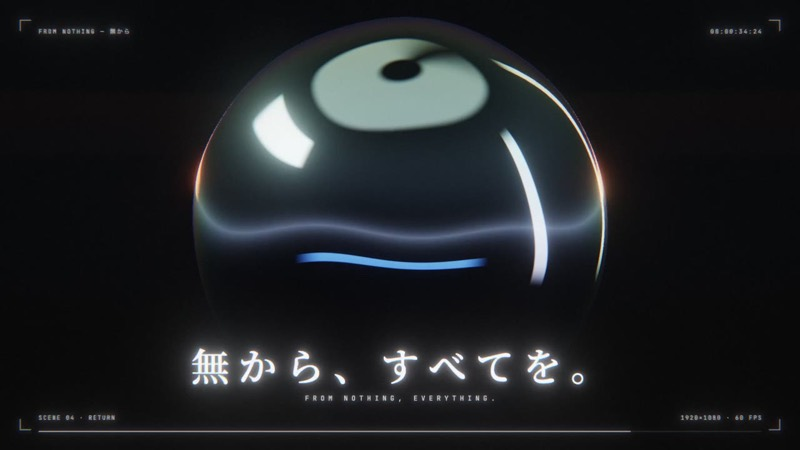
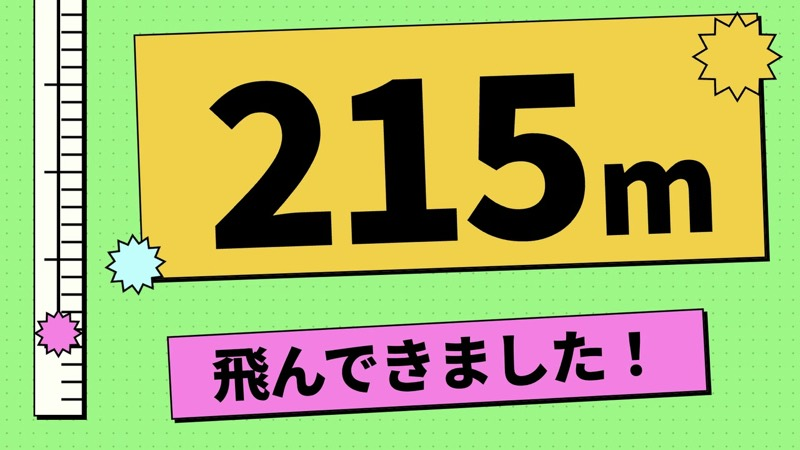
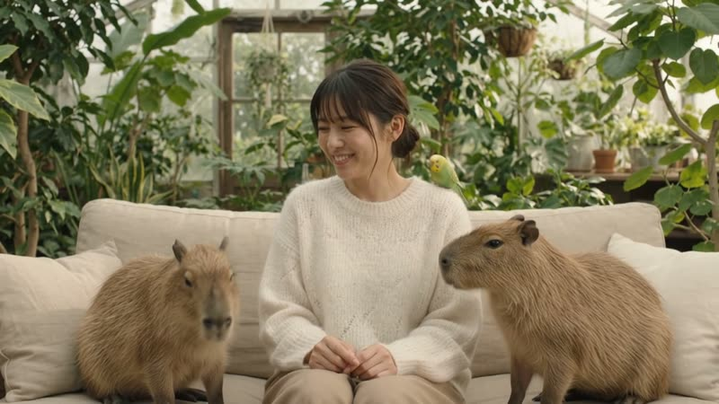
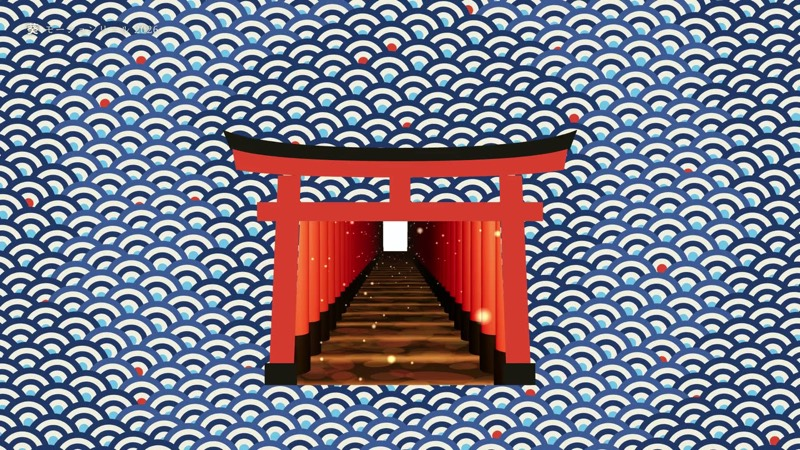
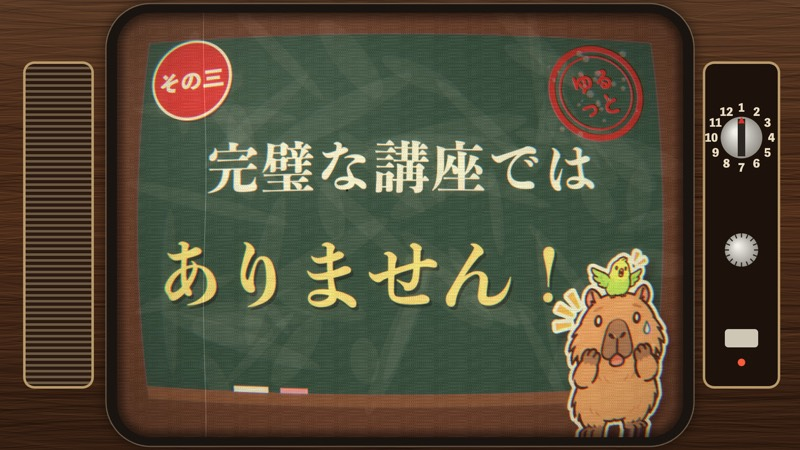
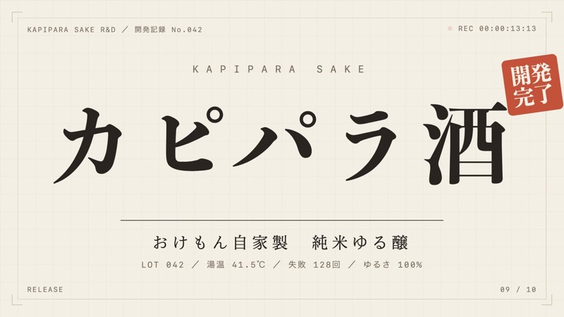
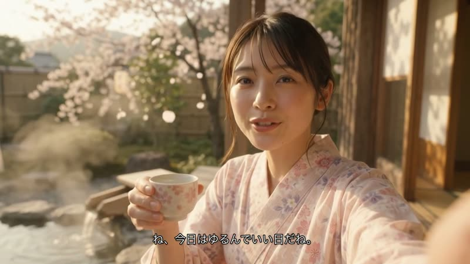
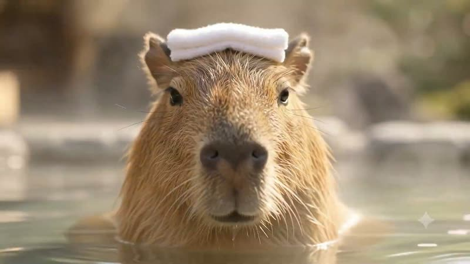

FROM NOTHING（無から）
基本の2行だけで作った42秒。光の点が金属の玉、回廊、光る街へと姿を変えます。約46分・途中の質問なし。
YouTubeで見る →2026年9月28日版 ・ おけもん（リベシティ）
私がふだん動画を作るときに使っている3つを、実際に作った作品といっしょにまとめました。むずかしい操作はほとんどなくて、やることは「日本語で頼んで、見て、直す」だけ。まずは1本、気軽に作ってみてください😊


何に使いたいかから、道具と実例をたどれます
Opus 5.5名前・肩書き・好きなことを渡して「30秒の自己紹介動画に」。文字と音楽だけでもかっこよく決まります。
MiniMax自分のイラストや写真を動かして、キャラクターに演技させる形も。
Opus 5.5いつもの Claude Code に「〇〇のCMを作って」と頼むだけで、CM風の動画になります。「昭和のテレビCM風に」「大真面目な研究記録みたいに」と雰囲気を添えるのがコツ。
Flow人や商品が実写っぽく映るCMにしたい時は Flow で10秒ずつ作ってつなぎます。
実例：昭和のCM風（60秒）・カピパラ酒ティザー・カピパラ酒CM（Flow）
いちばんのおすすめOpus 5.5日時・場所・どんな会かを渡して「告知動画に」。時刻や会の名前を大きく見せる動きが得意です。
Flow人と動物、ちょっとした事件が起きる10秒。セリフも入れられます。
MiniMax写真1枚から縦長（9:16）で、表情やしぐさまで作り込めます。可愛い→崩れる、の落差がウケます。
Opus 5.5基本の2行に、季節や好きな景色を一言足すだけ。お手本の映像に寄せるのもおすすめです。
実例：秋の夜長に・一滴・FROM NOTHING
3つとも、日本語で頼めばOKです
こんなのを作りたい文字や図形が動く、
かっこいい映像
Claude Opus 5.5
こんなのを作りたいGemini で、サクッと
実写みたいな動画を
Google Flow（Gemini Omni）
こんなのを作りたいお金を少し払っても、
本格的に作り込みたい
MiniMax H3 Max Turbo（fal）
どの道具でも同じです
プロンプトをこねくり回すより、「こんな感じ」の動画や画像を見せる方がずっと早いです。URLや画像を渡して「これに寄せて」でOK。
「Opus 5.5 で」「Flow の Omni で」のように、どれで作るかを先に決めて伝えます。
何に使うか、どんな気持ちにさせたいかを一言添えると、仕上がりがぐっと変わります。
名前を知っているだけで、AIへの伝わり方が変わります。
得意なものを分担すると、1本の完成度が上がります。
モーショングラフィックは、文字・図形・イラストが音楽に合わせて動く映像のこと。Opus 5.5 は、映像も音楽も効果音もぜんぶ自分でプログラムして作ってくれます。私は2行のプロンプトを送っただけで、42秒の作品ができました。「〇〇のCMを作って」と頼めば、CM風の動画もいつもの Claude Code で作れます。
/model opus と送ります。あなたが今できる最高のモーショングラフィックで、見た人が思わず「すごい」と声に出す1本を作ってください。 いま世界中で話題の「AIが本気で作るモーショングラフィック」です。あなたの腕前を、出し惜しみせず全力で証明してください。
プロンプトより、お手本見本集で「こんなの作りたい」を探して、2行の後ろに一言足すだけ。「墨の一滴が形を変えていく感じで」「方眼紙と判子で、研究記録みたいに」など。
ここぞの1本は /effort max2行の前に /effort max と送ると、もっと深く考えてくれます。利用枠は多めに使います。
写真やロゴも使える作品のフォルダに画像を入れて「この画像を使って」と言えばOK。
動画ファイルにしたい時「MP4に書き出して」と頼むか、Mac の画面収録（⌘+Shift+5）がかんたんです。

基本の2行だけで作った42秒。光の点が金属の玉、回廊、光る街へと姿を変えます。約46分・途中の質問なし。
YouTubeで見る →
墨の一滴が、文字・波・千本鳥居・判子へと形を変え続ける15秒。
YouTubeで見る →
今朝「昭和のCMみたいな1分版」とお題を出して作ってもらった60秒。木目のテレビ、くす玉、ハンコまで全部プログラムで描いています。
YouTubeで見る →
架空のお酒を、大真面目な研究記録に見立てた20秒。曲の山で商品名がドンと着地します。
YouTubeで見る →文字と図形と音楽だけの32秒。拍でぴたっと止まる気持ちよさが見どころ。
YouTubeで見る →Apple や Linear など、世界の発表映像をお手本にした作品を毎日足しています。どれも「このお手本に寄せて」と頼んで作りました。
見本集の再生リスト →Flow は Google の動画づくりアプリ。いちばん新しい動画モデル「Gemini Omni」を選ぶと、日本語の文章から音つきの動画ができます。人物の写真を1枚渡せば、その人が出てくる動画にもできます。
| プラン | 毎日 | 毎月の追加 | 720p 10秒（15クレジット）なら |
|---|---|---|---|
| 無料 | 50 | — | 1日3本まで |
| Google AI Plus | 50 | ＋200 | 月13本ぶん＋毎日の分 |
| Google AI Pro | 50 | ＋1,000 | 月66本ぶん＋毎日の分 |
| Google AI Ultra | 50 | ＋10,000〜 | たっぷり |
毎日の50は翌日に持ち越せません。月の分は請求日にリセットされます。無料のままだと、混む時間帯（日本時間の夜23時〜深夜2時ごろ）は作れないことがあります。モデルや画質で消費が変わるので、生成ボタンの横の数字を見てから押してください。
朝の静かなカフェ。木のテーブルに置かれた白いコーヒーカップから、湯気でできた手のひらサイズの小さな龍が生まれる。龍はカップの上でゆっくり一周し、こちらを見て小さくうなずく。窓から柔らかい金色の朝日。実写映画のような質感に、少しだけ魔法を感じる雰囲気。カップの寄りから、カメラがゆっくり近づく。カットを切り替えない一続きの映像。静かな店内の環境音と、龍が動くときのかすかな鈴の音。セリフと画面の文字は入れない。
セリフは「」で書くとそのまま喋る「ねえ、私の席なくなっちゃう」と書いたら、その通りに笑いながら言ってくれました。
秒ごとに書くと、CMらしくなる「0〜3秒：…」「3〜6秒：…」と時間割で書くと、その通りにカットが切り替わります。
「ゆっくり・やさしく」を重ねすぎない動きが小さくなって「場面が少し動いただけ」になりがち。CMっぽくしたい時は「画面全体が動く」と書きます。
人物の写真を使うなら Flow で同じ Omni でも Google Vids では、人物の写真を素材にすると3回とも弾かれました。Flow では通りました。
10秒ずつ3本作って、あとでつなぎます。はすきーさんがXで紹介していた作り方がとても分かりやすかったです。
今朝作った1本。カピバラ2匹とインコに席を取られて「ねえ、私の席なくなっちゃう」。写真1枚＋下のプロンプトで、720p・15クレジット・1回で完成。
YouTubeで見る →
架空のお酒のCM。Flow で10秒×3本を作ってつなぎ、ナレーション・曲・テロップをあとからのせました。
YouTubeで見る →
同じ Omni を Google Vids から使った人物なし版。絵コンテ→秒割りの型で、ほぼ指定どおりの秒でカットが切り替わりました。
YouTubeで見る →自然光の入る小さな温室カフェ。ベージュのリネンのソファに白い柔らかなニット姿の女性が座っている。彼氏が向かいでスマホを持って撮る目線。実写の質感。 10秒、16:9、一続きのショット。最初は顔と上半身が入る構図、ゆっくり引いて膝とソファの両側を見せる。 0〜3秒：女性がこちらを見て小さく微笑む。左からカピバラがゆっくり近づき、女性の膝に鼻先をそっと寄せる。女性が気づいて優しく撫でる。 3〜6秒：小さな黄緑色のセキセイインコが右から羽ばたいて、女性の肩にそっととまる。女性が目だけで肩を見て、こらえきれず小さく笑う。 6〜10秒：もう1匹のカピバラが右側から近づき、両側がもふもふでいっぱいになる。女性は幸せそうに困った顔でこちらを見て、自然な日本語の声で「ねえ、私の席なくなっちゃう」と笑いながら言う。 動物は自然な体格で穏やか。人物の顔を動物で隠さない。環境音は葉擦れ、羽ばたき、インコの小さなさえずり、女性の自然な笑い声。BGM・字幕・カット切り替えなし。 （実際は冒頭に「参照画像の女性と同じ顔を保つ」指定も入れて、写真を1枚渡しています）
中国の MiniMax 社の動画モデル「H3」を、動画AIをまとめて使えるサービス fal が、速く使えるように仕上げたもの。多少お金を払っても本格的なものを作りたい人向けです。写真1枚と文章から、秒単位の料金で動画を作れます。表情・しぐさ・セリフまで時間割で細かく指定でき、キャラクターに演技をさせるのが得意です。
| 画質 | 9/30まで | 10秒なら | 10月から |
|---|---|---|---|
| 480p | $0.0125 | 約$0.13 | $0.025 |
| 768p | $0.02 | 約$0.20 | $0.04 |
| 1080p | $0.04 | 約$0.40 | $0.08 |
fal 公式のモデルページの表記（「50% off」「The discount ends September 30」）を9月28日に確認。10月からは表の右の値段になります。
時間割で書く「0〜4秒：瞬きして気づく」「4〜8秒：照れて笑う」のように区切ると、その順に動きます。
写真のものは「そのまま」と書く顔・髪・服・部屋・机の上の物まで、変えてほしくない物を並べて書きます。
大きく動かさないTurbo は大きな動きが苦手。カメラは固定でわずかな手ぶれ、動きは小さく。苦手なところを最初から避けると、きれいに仕上がります。
セリフも入る日本語のセリフを「」で書き、声の感じ（眠そうな若い女性の声、など）を添えます。
イラスト1枚から8カットの演技を作り、ナレーション・曲・文字をあとから合成。動画生成は試作込みで計$0.40でした。
YouTubeで見る →静止画1枚から15秒×2本をつないだ30秒。前半は可愛く、後半は「もう無理、飲み過ぎた」と崩れる。可愛いだけより、崩れる方が「一緒にいる感じ」が出ました。
YouTubeで見る →Flow で 360p の8秒を1本。上の龍のプロンプトをそのまま貼るだけ。Google の月額プランがあれば、ついてくるクレジットで作れます。
2行を貼って、45分待つ。「〇〇のCMを作って」でCM風も。できたら「もっと〇〇に」と話しかけて直します。
MiniMax H3 Max Turbo。9/30までは半額で、768p・10秒が約$0.20。時間割でしぐさやセリフまで作り込めます。
作品を見て「こんなの作りたい」を探すところから
作品が動く様子をその場で見られます。世界のお手本と、それを真似して作ったおけもん版が並んでいます。
Opus 5.5 で作った作品の再生リスト。音つきで見られます。
Gemini Omni で作ったカピパラ酒CMなど。
このページの「基本の2行」を、画像つきで順番に解説しています。
お願いとツッコミを重ねて、自己紹介ムービーを仕上げるまでの記録です。